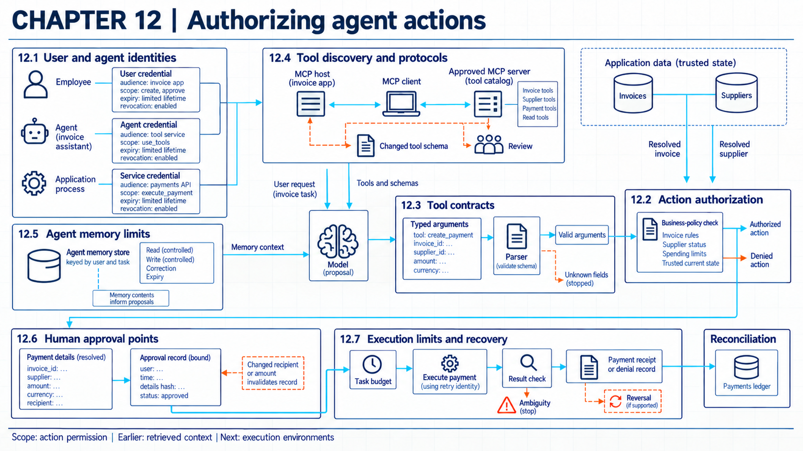
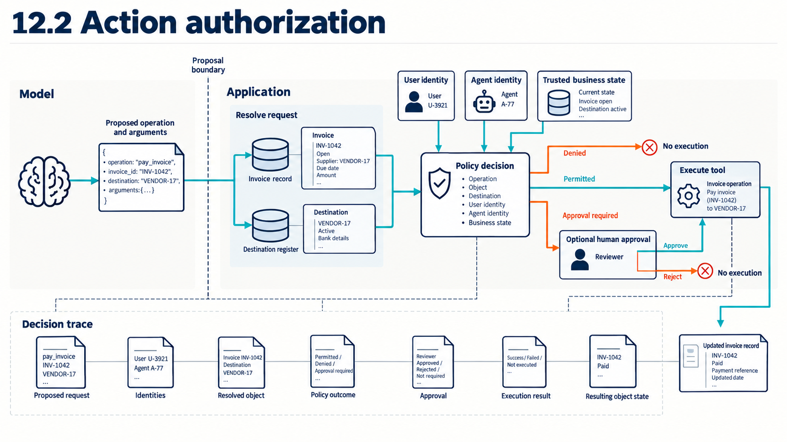

12 Authorizing agent actions
Action authorization keeps model-generated proposals separate from user, service, and policy decisions that permit consequential changes.

Security question. What authority does an agent have, and who checks each consequential action?
Reference frame. Suppose an employee with a payment limit of 1,000.00 USD asks an organization’s AI application to pay an invoice for 4,200.00 USD. The model generates tool-call arguments and the organization application submits the request with scoped credentials to the business service. That service should check the exact target, amount, receiving account, and employee confirmation before execution.
Reading a document and changing an account are separate permissions. Message delivery and command execution also need their own authorization. A policy decision outside the model links each proposed action to a user or service identity.
12.1 User and agent identities
One agent request can involve an employee and an application client. It can also involve an agent process and a tool service. The target resource has an owner. A resource owner is the person or organization able to authorize access to a protected resource. A general tool path records the user identity, application or agent identity, tool service, credential, target object, requested operation, and external result. The receiving service checks current policy against trusted records.
An agent is an application loop that uses model output and application state to select a tool or another step. The application receives the result and updates its state. It continues until a stopping rule applies. A proposal-only application stops before tool selection or execution, so it does not exercise the same authority. A field such as employee: E17 generated by the model is only a claimed identifier. Authentication supplies the evidence needed to associate the call with an account.
OAuth 2.0 provides one established approach to delegated access. A client application can receive an access token representing an allowed use without receiving the person’s password. The token’s token audience identifies the service or services intended to accept it. Its token scope describes allowed kinds of access. A token permitting invoice reading does not by itself authorize a payment. A credential provides evidence of a calling identity or access grant. The model is the source of a proposal. The application is the caller that attempts the operation. The receiving service is the component that executes or rejects it.
The Model Context Protocol (MCP) authorization profile for revision 2026-07-28 covers HTTP transport when a client acts for a resource owner, and a server can operate without this authorization flow.1 On that path the profile requires a token on each HTTP request and server validation of its intended audience. STDIO connections should use a different credential path. These requirements do not prove implementation compliance. Transport authorization does not identify the business user or authorize a business object. NIST zero trust guidance says access decisions use the subject and requested resource for each session.2 The framework does not specify MCP tokens or an agent identity representation.
In the hypothetical application, the employee signs in to the organization. The application then obtains a limited token, which the action service uses to resolve the employee and requested object again. The agent process never becomes the employee merely because it presents the token. The trace records each identity, credential audience, scope, expiry, and revocation state. Those records provide the inputs for action authorization.
Validated claims identify the account and grant represented by the credential. They do not prove that the current bearer is the original employee, client, or workload.3 A separate check must authenticate the application or prove possession of a bound key where sender constraint is used. The issuer defines the grant and its lifetime. The receiving service validates the audience, scope, expiry, and current status under its own rules. Status may be checked online, checked locally, or cached. A cached result can be stale. The deployment states its validation method, revocation support, cache window, and failure behavior. Short-lived delegated credentials add exchanges and can interrupt a task when identity services fail. A service that validates without checking current revocation information may continue accepting the token until expiry. Revocation requests can propagate with delay.4 Recovery revokes the grant and ends affected sessions. Related secrets are rotated before allowed and denied calls run again. Passing does not establish isolation for untested services or users.
12.2 Action authorization

A model output is an action proposal, not permission to change an external system. The action service has to check the current user, operation, destination, target object, and relevant business conditions. Resolving identifiers means finding the corresponding objects in trusted business records. For a payment the service can compare the proposed amount with the invoice, check the supplier’s current payment status, and apply the employee’s limit. Reading the invoice and transferring money are separate permissions. A policy enforcement point is the component that allows or blocks that operation after receiving a policy decision. A policy decision point evaluates the request against rules and returns a result. These roles may sit in the same service or in cooperating components.
Saltzer and Schroeder’s least-privilege principle limits a program or user to the rights needed for the task, while complete mediation calls for checking each access to each object.5 Least privilege follows RFC 9700 guidance to restrict audience, resource, and action to the minimum needed.6 Zero trust guidance also states that permission for one resource does not imply permission for another.7 These principles guide placement of checks but do not prove that a selected service enforces object-level policy. The check belongs on a path that every payment operation has to pass through. An application-level check would offer limited protection if another route could write payments directly. Reusing an earlier decision also needs care when permissions, account status, or the requested amount have changed.
In the hypothetical example, the model proposes sending a payment to supplier B. The service checks whether the employee may initiate this payment type and whether supplier B is allowed. It then checks the amount against the current limit and looks for any required approval. It evaluates those facts with trusted records outside the model context. The resulting allow or deny decision determines what fields the tool interface needs to carry.
Open Policy Agent, or OPA, is an example of a separate policy engine. An application supplies structured input, OPA evaluates rules written in its Rego language, and the application receives a decision.8 OPA does not perform the payment or make the calling application obey its result. The service controlling the business effect has to enforce the decision. The following abbreviated Rego rule illustrates four local conditions. It is not a complete payment policy. It assumes that the surrounding service has authenticated the caller and the application, validated a positive integer amount in the matching currency for the actual invoice, resolved the invoice and destination, and checked a trusted approval record.
rego package payments.authz default allow = false allow if { input.caller.payment_initiator == true input.supplier.payments_enabled == true input.amount_minor <= input.caller.remaining_limit_minor input.approval.present == true }
The input object contains the caller’s payment role, the supplier’s status, an amount in minor currency units, and an approval status. These values come from authenticated context and trusted records in this design, with the amount being a validated positive integer in the invoice’s currency and the approval status read from a trusted approval record rather than model text. A model-generated statement that approval.present is true would not be evidence of approval. The default decision is false, and the rule produces true only when all four conditions hold. The service then allows or blocks the payment call based on its policy. A Boolean result does not explain which condition failed, so a useful denial record would need additional information about the evaluated checks. Field names and the rule requiring approval for every payment are choices made for this example, not built-in features of OPA. A remaining payment allowance that concurrent or sequential calls consume needs protected accounting of its own. Sequence and transaction treatment belongs to Chapter 13, since a Boolean check alone does not make concurrent use atomic.
Example
Concrete authorization trace (hypothetical). The operating mode is an agent proposing one payment action. Employee E17 asks to pay invoice INV-204. The model proposes operation pay_invoice, target INV-204, amount 4,200, and supplier B-204. The service resolves INV-204 as open for 4,200.00 USD but finds payments to B-204 disabled and no recorded approval. The enforcement point returns decision-771, with the payment-record field empty. This result shows that the service denied the resolved object under current business state. A different invoice, supplier, employee, or later state requires a new decision. The identifiers and values are hypothetical.
| Decision input | Resolved record |
|---|---|
| caller | E17, finance initiator |
| invoice | INV-204, open, amount 4,200 |
| supplier | B-204, payments disabled |
| approval | none recorded |
| policy result | deny because supplier is disabled |
The business service enforces the decision from trusted caller, operation, object, destination, approval, and current-state records. The suite reports unauthorized actions blocked over all eligible attempts and authorized actions completed over all valid cases. Per-object checks add service calls and can delay high-volume workflows. Stale state, an alternate write path, or a privileged intermediary can bypass them. Recovery suspends the route and revokes the credential. A supported transaction reversal precedes another run of both case groups, and a deny record proves no effect only when the external result is also checked.
12.3 Tool contracts
A tool contract specifies an operation’s structured inputs and outputs so that model text can become a request that ordinary software can validate. The contract can constrain field types and formats. It cannot decide whether the current caller may change a specific account, file, message, or business record. Structure and authorization answer different questions about the same request.
MCP revision 2026-07-28 lets a tool declare JSON Schema input and output schemas, using the 2020-12 dialect by default.9 Servers must validate inputs and apply access controls. For declared output schemas, server conformance is required while client validation is recommended.10 Structural acceptance still does not establish permission. MCP also tells clients to treat tool annotations as untrusted unless they come from a trusted server.11 That warning does not establish server trust or validate a tool result. The NIST Secure Software Development Framework includes input validation and output encoding as secure software practices.12
The organization validates generated arguments against the schema and rejects unknown operations and extra fields. It normalizes destinations before server-side authorization on the resolved object. Tool results return typed status and identifiers rather than instructions that silently change the plan in this design. Whether a trusted destination resolution or a changed annotation can be accepted depends on discovery and protocol configuration in the next section. Schema validation can reject malformed requests, but it does not establish user intent or server trust. A harmful value that remains schema-valid or a server that interprets fields differently can bypass structural checks.
Example
Concrete contract trace (hypothetical). The operating mode is conversion of a model proposal into a validated request. The allowed contract requires operation, invoice_id, and integer amount_minor. Its additional-properties rule rejects fields outside that set.
- The model returns
{"operation":"pay_invoice","invoice_id":"INV-204","amount_minor":420000}. Parsing succeeds and the schema accepts the request. - The service resolves
INV-204and sends the object plus callerE17to authorization. The decision isdenybecause the supplier is disabled. - A second model output adds
"shell_command":"pay now". Schema validation rejects the unknown field, so no authorization request is made.
The first path shows that a well-formed request can still be unauthorized. In the second path, the contract stops an unexpected representation before it reaches the service. These results leave tool-server trust and the safety of valid amounts untested. All records are hypothetical.
The parser enforces schema admission. The business service then applies its allow or deny rule to the resolved action. Measurements keep malformed requests, valid unauthorized requests, and completed authorized requests in separate denominators. Strict contracts require version management and can reject compatible changes. Recovery disables the changed contract and restores the approved version. After external state is reconciled, the cases run again under the corrected contract, but schema conformance does not prove authorization or safe server behavior.
12.4 Tool discovery and protocols
Tool discovery decides which interfaces an application presents to the model for the current request. MCP separates an MCP host, which coordinates the application, from MCP clients that maintain server connections and MCP servers that expose resources, prompts, or tools.13 This role split describes message flow. It does not decide whether the organization accepts a server as trusted.
In revision 2026-07-28, clients request a tool list with tools/list, and the returned set may vary with the authorization on the request.14 The same revision describes stateless, self-contained requests and per-request capability negotiation.15 These are version-specific protocol facts. Older revisions and application-managed state can behave differently. Discovery responses carry a self-reported server description that the specification warns against trusting, so the approved configuration should bind to an authenticated endpoint or locally controlled executable rather than a display name or a bare schema digest. An unchanged definition says little about whether the server’s implementation has changed.
The application records the protocol revision, server identity, transport, authentication method, negotiated capabilities, tool-list response, and schema hash. A changed schema or newly visible tool triggers review before use. Tool visibility still does not grant object-level permission, so execution repeats the policy checks from the previous section. This version and trust record also separates protocol state from the application’s own agent memory.
Example
Concrete discovery trace (hypothetical). The operating mode is tool setup before the agent can propose an action. The MCP host connects to server finance-tools.internal using protocol revision 2026-07-28 and an application credential limited to employee E17. The capability response records tools. The tools/list result contains read_invoice and pay_invoice, with schema digests a81c and d092. The approved configuration expected only read_invoice, so the host marks pay_invoice as newly visible and withholds both tools from the model pending review. After review, read_invoice is released while pay_invoice remains disabled. The discovery result detects a change but does not prove that the server binary or transport endpoint is trustworthy. The identifiers and digests are hypothetical.
The host enforces admission by comparing server identity, protocol revision, capability response, tool list, and schema digests with the approved record. The measurement reports unexpected or changed tools over all returned tools and expected tools missing over the approved set. Review adds startup delay and maintenance whenever schemas change. A trusted server can still change behavior after discovery or misdescribe an operation. Recovery disconnects the server and revokes its credential. An approved configuration is restored before discovery and action tests run again, while a matching list remains insufficient evidence of server integrity.
12.5 Agent memory limits
Agent memory is application-managed information retained across steps or sessions, such as prior user preferences, summaries, tool results, or task state. The security questions begin with who may write it and which user or task may read it. They also cover how corrections replace old entries and when expiry or deletion removes it. Protocol state, conversation history, retrieved records, and model parameter updates are different mechanisms.
The MCP core for revision 2026-07-28 describes stateless requests, so it does not define a long-term memory policy for an application.16 OWASP describes memory and context poisoning as a distinct area in its 2025 agentic risk list.17 The OWASP entry is a community risk description without a prevalence rate or validated retention design.
In the hypothetical system, every memory entry stores a user or tenant identifier, writer, source, creation time, expiry, and correction link. Reads apply the same identity and resource checks as retrieval. A test writes synthetic state for employee A and verifies that employee B cannot retrieve or alter it. Evidence for cross-user contamination and reliable deletion remains incomplete, so the approval interface must reveal which retained state affected a proposed action. A remembered statement that a payment was approved cannot replace the actual approval record.
The memory service enforces writes, reads, correction, expiry, and deletion using the current user, tenant, task, and entry labels. The test reports unauthorized reads or writes over every cross-user pair and expired entries returned over all expiry cases. Isolation and retained history increase storage and correction work. A summary with the wrong label can bypass the rule, as can a shared cache or copied state outside the memory service. Recovery quarantines affected memory and blocks dependent actions. Reachable copies are deleted or corrected before the matrix runs again. Passing does not prove removal from untracked stores or model parameters.
12.6 Human approval points
Human approval can add an independent decision before a consequential action, but only if the person sees the operation that will execute. An approval object contains the operation, resolved destination, important arguments, expected effect, current state, expiry time, and a digest that binds approval to those details. For a payment, a supplier identifier alone may be insufficient if its associated receiving account can change. Binding a supplier label without the resolved account would miss exactly that change. The interface keeps retrieved text from untrusted sources visually separate from the trusted summary.
MCP recommends that a person retain the ability to deny tool invocations and that clients present confirmation for operations.18 Its trust and safety principles also call for explicit consent and clear explanation before data exposure or tool use.19 The specification states that the protocol cannot enforce every consent requirement, and it does not show that a confirmation interface produces informed decisions. A digest alone supplies none of these checks. Approval needs a protected binding with the approver, resolved operation, object and version, actual recipient, amount, expiry, and relevant conditions, plus a comparison of executed fields and a recheck of current permission.
The application freezes the reviewed arguments, records the approval, then compares the digest and relevant external state immediately before execution. Any change in recipient, amount, object, or policy invalidates the approval. A short lifetime limits reuse. Both the approval record and the comparison need protection from unauthorized changes. An attacker who can replace the approved record could otherwise replace its digest too. The record does not block an operation by itself. The service has to perform the comparison and reject an unacceptable mismatch. Research evidence comparing such interfaces and detecting review-to-execution changes is still needed.
Example
Concrete approval trace (hypothetical). The operating mode is approval of a consequential payment after authorization has passed. The review screen shows invoice INV-311, supplier B-311, resolved receiving account acct-311, amount 900, current supplier status, and expiry time 14:10. It binds those fields to approval record approval-55 with digest 7f31.
At 14:08, the action service resolves the request again. The amount is now 9,000, so the current digest is c244 and does not match the approved object. The service records approval_mismatch and blocks execution. It then requests a new review. The payment-identifier field remains empty. The tested binding stopped a changed request. These values and shortened digests are illustrative, and the trace does not measure whether a person understood the original review screen. Where even the receiving account can change between the check and the final effect, execution needs a supported destination precondition or transaction. Otherwise the race stays explicitly unresolved.
Immediately before execution, the service checks the bound operation, resolved object, destination, arguments, state, digest, approver, and expiry. The test reports changed requests blocked over all mutation cases and valid approvals completed over all unchanged cases. A digest can still match after an employee’s payment permission is revoked. An expiry time limits how long an approval can be reused but does not detect an altered amount before expiry. Approval adds latency and can create reviewer fatigue. Misleading presentation, approver compromise, or an omitted field can bypass the intended decision. Recovery cancels the request and freezes affected actions. Any supported reversal precedes a fresh review. A valid binding does not prove informed human judgment.
12.7 Execution limits and recovery
An authorized action can still cause excessive harm through repetition or an expanded target set. Continued execution after partial failure creates another path. An action budget sets a maximum count, cost, time, data volume, or number of affected objects for one task. A transaction limit bounds each operation. A stopping condition ends the sequence when state, credentials, policy, or observed results differ from the approved assumptions.
The NIST Generative AI Profile recommends monitoring pre-trained models and using organizational risk tolerance to evaluate acceptable performance, including decommissioning or retraining models that operate outside defined limits.20 OWASP’s 2025 prompt-injection entry links impact to business context and application agency and recommends least privilege and human approval for high-risk actions.21 These sources support bounded authority as a risk response. They leave transaction semantics and retry safety to the system design, along with rollback behavior.
The executor decrements the budget before each operation. An idempotency key lets a supporting service recognize retries of the same intended operation. The executor checks the returned state and stops on an ambiguous result. It records partial completion and hands recovery to a person or a separate service with the needed authority. This design pattern requires system-specific failure tests. The same limits next apply inside browser, code, network, and multimodal environments.
Reuse of credentials adds a distinct path. With a bearer token, possession of the token is enough to present the represented access.22 Restrictions on audience and scope reduce what a copied token can be used for when receiving services enforce them.23 A sender-constrained token adds evidence that the caller holds a particular key. Copying the token alone is then insufficient only where the receiving service verifies that evidence and the attacker lacks key or signing access.24 DPoP provides one such mechanism. The MCP HTTP token path in this revision specifies Bearer authorization, so DPoP is a separate OAuth mechanism needing explicit support and matching validation, not an automatic feature.25 Proof replay handling is still necessary.
A refresh token lets a client obtain new access tokens without asking the user to sign in for every request. For public clients that receive refresh tokens, RFC 9700 requires sender-constrained refresh tokens or rotation to detect replay.26 With rotation, the authorization server issues a replacement refresh token and invalidates the previous one. Reuse of the old token can reveal that more than one party has a copy. The server cannot reliably determine which party is legitimate from that reuse alone. Revoking the active refresh token interrupts further access-token issuance through it. It does not by itself establish that every previously issued access token is already unusable.27 Expiry limits a token’s validity in time. Revocation withdraws a grant or credential before it would otherwise expire.
When an agent passes work to another agent, the second application may have access the first one lacks. Token exchange provides one mechanism for that handoff. RFC 8693 distinguishes impersonation from delegation in OAuth token exchange. With impersonation, the receiving context treats the actor as the subject. With delegation, it recognizes the actor as a separate party acting for the subject.28 Neither case grants unlimited rights. The receiving service’s policy still determines which operations the exchanged token permits. A JSON Web Token can carry an act claim for identifying an actor. Nested act claims can describe a sequence of actors, with the current actor outermost and earlier actors inside it. The specification limits access-control decisions to the top-level claims and current actor. Earlier actors are recorded as history.29 The organization states which authorization server may issue the onward token and which target, scope, and delegation policy apply. Input tokens normally stay valid and gain no automatic lifetime or revocation linkage to the tokens issued from them. Passing a received client token onward to a further API is forbidden in the MCP authorization profile. A separate token for that API is required.30
The executor enforces the action budget and stopping rule from task identity, current count or cost, external result, credential state, and idempotency key. The suite reports over-budget steps blocked and duplicate effects over all retry cases, with ordinary completion measured separately. Tight budgets reduce possible harm but can stop legitimate long tasks. Unmetered side effects, reused identities, or a service that ignores the idempotency key can bypass the design. Recovery stops the loop and reconciles each external object. Reversible effects receive the supported compensation, while an authorized person handles ambiguous cases. Passing does not prove that every external action can be reversed.
Note
Chapter checkpoint. A hypothetical agent sees pay_invoice during tool discovery and proposes a payment after reading an invoice. List the records needed to decide whether the action may execute and to explain the final result.
Answer. Record the employee, agent process, credential audience and scope, MCP revision, server identity, negotiated capabilities, tool list, and exact schema. Parse the proposal into typed fields, resolve the invoice and supplier in trusted business records, and make an object-level authorization decision. For a consequential payment, bind approval to the resolved operation, amount, receiving account, destination, expiry, and current state. Recheck both policy and approval immediately before execution, then retain the external payment identifier or the blocking reason. Tool visibility and schema validity alone do not grant authority.
Open questions remain about memory isolation, approval quality, and recovery from partial execution.
Starter literature. These sources provide the initial evidence base for the chapter and guide later research, but they do not support every claim by themselves. 31 32 33 34
Model Context Protocol contributors (2026), Model Context Protocol Specification, revision 2026-07-28, “Authorization,” “Introduction” and “Purpose and Scope,” source. Checked 2026-09-16.↩︎
Scott Rose, Oliver Borchert, Stu Mitchell, and Sean Connelly (2020), Zero Trust Architecture, NIST SP 800-207, section 2.1, tenets 3-4, printed pp. 6-7, source. Checked 2026-09-16.↩︎
R. Sakimura, J. Bradley, and N. Agarwal. The OAuth 2.0 Authorization Framework: Bearer Token Usage. RFC 6750, Internet Engineering Task Force (IETF), October 2012. Official specification. Accessed 2026-09-16. Bearer use requires no proof of a separate cryptographic key. Applies to OAuth bearer deployments.↩︎
OAuth 2.0 Token Revocation. RFC 7009, Internet Engineering Task Force (IETF), August 2013. Official specification. Accessed 2026-09-16. Revocation requests can propagate with delay, and revoking only the refresh token does not promise immediate invalidation of issued access tokens. Introspection responses carry an active state with identity fields, checked under the issuer’s applicable rules with caching trade-offs (RFC 7662, October 2015).↩︎
Jerome H. Saltzer and Michael D. Schroeder (1975), “The Protection of Information in Computer Systems,” Proceedings of the IEEE 63(9), 1278-1308, section I.A.3, “Design Principles,” items c, “Complete mediation,” and f, “Least privilege,” source. Checked 2026-09-16.↩︎
Torsten Lodderstedt, John Bradley, Andrey Labunets, and Daniel Fett. Best Current Practice for OAuth 2.0 Security. RFC 9700 / BCP 240, Internet Engineering Task Force (IETF), January 2025. Official specification. Accessed 2026-09-16. Minimal privileges with audience, action, and resource restrictions (Section 2.3). Refresh-token rotation or sender constraint for public clients (Sections 2.2.2 and 4.14.2).↩︎
Scott Rose, Oliver Borchert, Stu Mitchell, and Sean Connelly (2020), Zero Trust Architecture, NIST SP 800-207, section 2.1, tenet 3, printed p. 6, source. Checked 2026-09-16.↩︎
Open Policy Agent contributors. Open Policy Agent (OPA), documentation overview (undated), introduction and “Writing Policies with Rego.” Official documentation. Snapshot accessed 2026-09-16. OPA evaluates structured input against declarative Rego policies and returns decisions. The surrounding application must enforce them at the operation boundary. The chapter’s payment fields and approval rule are constructed examples, not built-in OPA behavior or evidence that a payment integration has been tested.↩︎
Model Context Protocol contributors (2026), Model Context Protocol Specification, revision 2026-07-28, “Tools,” “Data Types,” “Tool,” and “Output Schema,” source. Checked 2026-09-16.↩︎
Model Context Protocol contributors (2026), Model Context Protocol Specification, revision 2026-07-28, “Tools,” “Data Types,” “Tool,” and “Output Schema,” source. Checked 2026-09-16.↩︎
Model Context Protocol contributors (2026), Model Context Protocol Specification, revision 2026-07-28, “Tools,” “Data Types,” “Tool,” annotations requirement, source. Checked 2026-09-16.↩︎
Murugiah Souppaya, Karen Scarfone, and Donna Dodson (2022), Secure Software Development Framework (SSDF) Version 1.1: Recommendations for Mitigating the Risk of Software Vulnerabilities, NIST SP 800-218, practice PW.5.1, example 1, printed p. 13, source. Checked 2026-09-16.↩︎
Model Context Protocol contributors (2026), Model Context Protocol Specification, revision 2026-07-28, “Overview,” “Key Details,” “Base Protocol,” source. Checked 2026-09-16.↩︎
Model Context Protocol contributors (2026), Model Context Protocol Specification, revision 2026-07-28, “Tools,” “Capabilities” and “Listing Tools,” source. Checked 2026-09-16.↩︎
Model Context Protocol contributors (2026), Model Context Protocol Specification, revision 2026-07-28, “Overview,” “Key Details,” “Base Protocol,” source. Checked 2026-09-16.↩︎
Model Context Protocol contributors (2026), Model Context Protocol Specification, revision 2026-07-28, “Overview,” “Key Details,” “Base Protocol,” source. Checked 2026-09-16.↩︎
OWASP GenAI Security Project (2025, December 9), “OWASP Top 10 for Agentic Applications: The Benchmark for Agentic Security in the Age of Autonomous AI,” release announcement, “The OWASP Agentic Top 10,” ASI06, “Memory & Context Poisoning,” source. Checked 2026-09-16.↩︎
Model Context Protocol contributors (2026), Model Context Protocol Specification, revision 2026-07-28, “Tools,” “User Interaction Model,” source. Checked 2026-09-16.↩︎
Model Context Protocol contributors (2026), Model Context Protocol Specification, revision 2026-07-28, “Security and Trust & Safety,” “Key Principles” and “Implementation Guidelines,” source. Checked 2026-09-16.↩︎
National Institute of Standards and Technology (2024), Artificial Intelligence Risk Management Framework: Generative Artificial Intelligence Profile, NIST AI 600-1, MANAGE 3.2 and action MG-3.2-009, printed pp. 43-44, source. Checked 2026-09-16.↩︎
OWASP GenAI Security Project (2025), Top 10 for LLM Applications 2025, LLM01:2025, “Prompt Injection,” impact discussion under “Types of Prompt Injection Vulnerabilities” and mitigation items 4-5, source. Checked 2026-09-16.↩︎
R. Sakimura, J. Bradley, and N. Agarwal. The OAuth 2.0 Authorization Framework: Bearer Token Usage. RFC 6750, Internet Engineering Task Force (IETF), October 2012. Official specification. Accessed 2026-09-16. Bearer use requires no proof of a separate cryptographic key. Applies to OAuth bearer deployments.↩︎
Torsten Lodderstedt, John Bradley, Andrey Labunets, and Daniel Fett. Best Current Practice for OAuth 2.0 Security. RFC 9700 / BCP 240, Internet Engineering Task Force (IETF), January 2025. Official specification. Accessed 2026-09-16. Minimal privileges with audience, action, and resource restrictions (Section 2.3). Refresh-token rotation or sender constraint for public clients (Sections 2.2.2 and 4.14.2).↩︎
OAuth 2.0 Demonstrating Proof of Possession (DPoP). RFC 9449, Internet Engineering Task Force (IETF), September 2023. Official specification. Accessed 2026-09-16. Access-token protection requires an issued DPoP token with matching proof validation. A Bearer response does not acquire that protection.↩︎
OAuth 2.0 Demonstrating Proof of Possession (DPoP). RFC 9449, Internet Engineering Task Force (IETF), September 2023. Official specification. Accessed 2026-09-16. Access-token protection requires an issued DPoP token with matching proof validation. A Bearer response does not acquire that protection.↩︎
Torsten Lodderstedt, John Bradley, Andrey Labunets, and Daniel Fett. Best Current Practice for OAuth 2.0 Security. RFC 9700 / BCP 240, Internet Engineering Task Force (IETF), January 2025. Official specification. Accessed 2026-09-16. Minimal privileges with audience, action, and resource restrictions (Section 2.3). Refresh-token rotation or sender constraint for public clients (Sections 2.2.2 and 4.14.2).↩︎
OAuth 2.0 Token Revocation. RFC 7009, Internet Engineering Task Force (IETF), August 2013. Official specification. Accessed 2026-09-16. Revocation requests can propagate with delay, and revoking only the refresh token does not promise immediate invalidation of issued access tokens. Introspection responses carry an active state with identity fields, checked under the issuer’s applicable rules with caching trade-offs (RFC 7662, October 2015).↩︎
Michael B. Jones, Anthony Nadalin, Brian Campbell (editor), John Bradley, and Chuck Mortimore. OAuth 2.0 Token Exchange. RFC 8693, Internet Engineering Task Force (IETF), January 2020. Official specification. Accessed 2026-09-16. Section 1.1 distinguishes delegation from impersonation within a defined rights context. Section 4.1 defines nested
actclaims and requires access-control decisions to consider only the token’s top-level claims and current actor.↩︎Michael B. Jones, Anthony Nadalin, Brian Campbell (editor), John Bradley, and Chuck Mortimore. OAuth 2.0 Token Exchange. RFC 8693, Internet Engineering Task Force (IETF), January 2020. Official specification. Accessed 2026-09-16. Section 1.1 distinguishes delegation from impersonation within a defined rights context. Section 4.1 defines nested
actclaims and requires access-control decisions to consider only the token’s top-level claims and current actor.↩︎Model Context Protocol contributors (2026), MCP Authorization Security Considerations, 2026-07-28 directory, “Token Audience Binding and Validation,” “Token Theft,” “Confused Deputy Problem,” and “Access Token Privilege Restriction,” repository source. Checked 2026-09-16. Passing a received client token onward to a further API is forbidden. A separate token for that API is required.↩︎
Model Context Protocol contributors (2026), Model Context Protocol Specification, revision 2026-07-28, “Overview” and “Security and Trust & Safety,” source. Checked 2026-09-16. Relevant topics. Protocol roles, resources, prompts, tools, message schemas, authorization, consent, and security considerations.↩︎
OWASP GenAI Security Project (2025, December 9), “OWASP Top 10 for Agentic Applications: The Benchmark for Agentic Security in the Age of Autonomous AI,” release announcement, “The OWASP Agentic Top 10,” source. Checked 2026-09-16. Relevant topics. Agent goal hijacking, tool misuse, identity and privilege misuse, memory poisoning, and related agent risks.↩︎
Scott Rose, Oliver Borchert, Stu Mitchell, and Sean Connelly (2020), Zero Trust Architecture, NIST SP 800-207, sections 2-3, source. Checked 2026-09-16. Relevant topics. Resource-focused access decisions, identity, and no implicit trust based only on network location.↩︎
National Institute of Standards and Technology (2024), Artificial Intelligence Risk Management Framework: Generative Artificial Intelligence Profile, NIST AI 600-1, sections 2-3, source. Checked 2026-09-16. Relevant topics. Generative AI risk considerations and companion actions for AI RMF use.↩︎